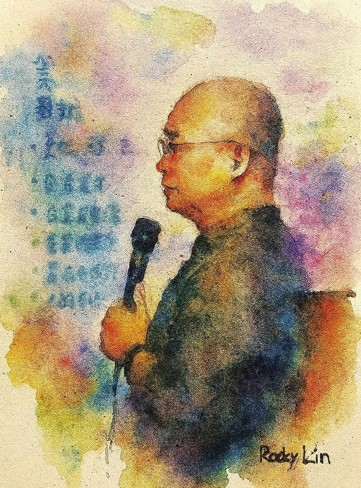
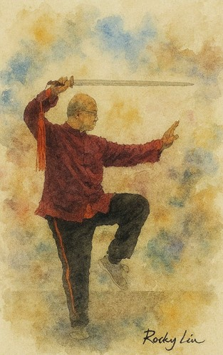

關於 ReCAST · About ReCAST
ReCAST 致力於結合孫子兵法的戰略哲學、太極拳的具身實踐，以及當代管理與教育的應用，推動東方智慧的現代化詮釋與跨域落地。我們的使命是將「戰略思維」轉化為「身體可感的實踐力」，並透過研究、教學與社會參與創造長期價值。
孫子兵法語義重構
具身化策略素養
DSTM / DDCSM
ESG × 教育 × 管理
AI / AR / VR 應用
ReCAST integrates the strategic philosophy of Sun Tzu’s Art of War, the embodied practice of Taijiquan, and modern applications in management and education. Our mission is to translate strategic thinking into embodied, actionable capabilities that create long-term value through research, teaching, and social engagement.
Semantic reframing of Sun Tzu
Embodied strategic literacy
DSTM / DDCSM
ESG × Education × Management
AI / AR / VR for learning
核心領域 · Core Areas
- 孫子兵法語義重構（如：詭／詐、急於丘役）與戰略模型建構
- 太極拳的具身認知與策略素養訓練（推手、鬆與中定）
- 大禹式動態競爭策略模型（DSTM / DDCSM）之理論與實作
- ESG 與管理教育 / 組織變革的整合應用
- AI / AR / VR 支援的戰略與太極拳學習設計
- Semantic reframing of Sun Tzu (e.g., Gui/Zha, Ji Yu Qiu Yi) and strategic modeling
- Embodied cognition in Taijiquan and strategic literacy training (tui shou, song, zhong ding)
- The Dayu-Style Dynamic Strategy Model (DSTM / DDCSM): theory and practice
- Integrated applications to ESG, management education, and organizational change
- AI / AR / VR-assisted learning design for strategy and Taijiquan
成果與出版（擇要）· Selected Publications
活動剪影 · Gallery
若無法載入，請點：If the embed doesn't load, open: Google Drive
贊助與合作 · Funders & Partners
- 主要贊助：（單位名稱 / 計畫名稱 / 年度 / 金額或類別）
- 共同合作：（學術單位或協會名稱 / 合作內容）
- 計畫編號：（如有政府或校內計畫編號，請填寫）
- 致謝聲明：感謝（贊助方）對 ReCAST 的支持；本文觀點不代表贊助方立場。
- Primary Funder: (Organization / Project name / Year / Amount or type)
- Collaborating Partners: (Institutions / Associations & scope of collaboration)
- Grant / Project ID: (Government or university project code, if applicable)
- Acknowledgment: We acknowledge the support from (Funder). Views are the authors’ own.
創辦人 · Founder


Ph.D., National Cheng Kung University
Associate Professor, I‑Shou University
International Taijiquan Coach & Referee
Sun Tzu × DSTM/DDCSM
中文
- 學歷：國立成功大學機械工程博士
- 現職：義守大學工業管理學系副教授（曾任系主任）
- 專長：孫子兵法語義重構與管理應用、太極拳具身認知、動態競爭策略模型（DSTM/DDCSM）
- 資格：太極拳國際級教練、國家級教練、裁判
- 教學與推廣：孫子兵法與管理特論、當代太極拳思想與實踐、USR 樂齡健康計畫
- 研究與出版：國際研討會與期刊發表，並於 SocArXiv / ResearchGate 發表多篇 preprint
English
- Education: Ph.D. in Mechanical Engineering, National Cheng Kung University
- Position: Associate Professor (former Chair), Dept. of Industrial Management, I‑Shou University
- Expertise: Strategic semantics of Sun Tzu, embodied cognition via Taijiquan, Dynamic Strategy Models (DSTM/DDCSM)
- Credentials: International/National Taijiquan coach & certified referee
- Teaching & Outreach: Sun Tzu & Management, Contemporary Taijiquan—Thought & Practice, USR projects on active aging
- Publications: Conference papers and preprints on SocArXiv/ResearchGate
Contact
Email: rocky@isu.edu.tw (Academic) / findrocky@gmail.com (Personal)
YouTube: @isuimrocky1877
LinkedIn: Profile (replace)
ResearchGate: Profile (replace)